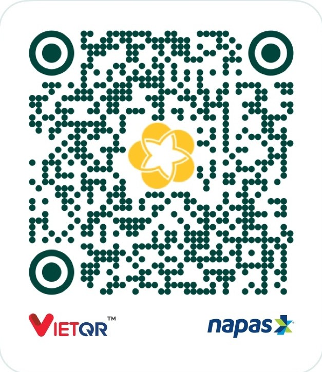

Ứng dụng quản lý thư viện
Thư viện ngăn nắp.
Công việc nhẹ nhàng.
QLTV Desktop giúp quản lý sách, độc giả và hoạt động mượn trả trong một không gian trực quan, nhanh chóng.
Tổng quan
Chào buổi sáng!
Hoạt động mượn sách7 ngày qua
Mới cập nhật•••
ANhà giả kimPaulo Coelho
DDế mèn phiêu lưu kýTô Hoài
MMắt biếcNguyễn Nhật Ánh
✓Mượn sách thành côngDữ liệu đã được cập nhật
HLM392 độc giảĐang hoạt động
Được xây dựng choThư viện trường họcThư viện cộng đồngTủ sách nội bộ
Tính năng nổi bật
Mọi thứ bạn cần.
Không gì thừa thãi.
Công cụ thiết yếu để vận hành thư viện hiệu quả, được sắp xếp trong giao diện thân thiện.
▤
Quản lý sách
Lưu trữ, tìm kiếm và phân loại đầu sách. Theo dõi tình trạng từng cuốn theo thời gian thực.
↗
Mượn & trả nhanh
Đơn giản hóa giao dịch, nhắc hạn và ghi nhận lịch sử rõ ràng.
♙
Quản lý độc giả
Hồ sơ thành viên tập trung, dễ tra cứu và cập nhật.
NANguyễn An Hoạt độngMHMinh Hà Hoạt động
⌁
Báo cáo trực quan
Nắm bắt hoạt động qua số liệu rõ ràng. Xuất báo cáo khi cần.
Luôn tốt hơn mỗi ngày
Cập nhật
minh bạch.
Theo dõi tính năng mới, cải tiến và sửa lỗi trong từng phiên bản QLTV Desktop.
Xem tất cả trên GitHub ↗Mới nhất
QLTV 2.3.9
- Sửa lỗi ghi nhật ký hoạt động.
Đang tải lịch sử phát hành…
“
Phần mềm tốt không làm công việc thêm phức tạp. Nó giúp ta có thêm thời gian cho điều quan trọng.
Về dự án
Được làm với sự
tỉ mỉ & thấu hiểu.
QLTV Desktop hướng đến trải nghiệm quản lý thư viện gần gũi, dễ tiếp cận và phù hợp với nhu cầu thực tế.
Mỗi bản cập nhật tập trung vào độ ổn định, tốc độ và những cải tiến nhỏ tạo nên khác biệt lớn trong công việc hằng ngày.
●
Nhà phát triển
Đậu Bá Cường
cuongdauba2006@gmail.com

Donate5181001267 — BIDV
Sẵn sàng bắt đầu?
Thư viện của bạn.
Gọn gàng hơn từ hôm nay.
Miễn phí tải xuống. Cài đặt nhanh chóng trên Windows.
Tải QLTV v2.3.9